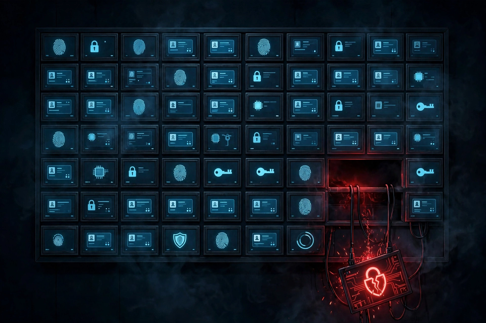

Edition #7: Week of October 28 - November 3, 2026
Listen to this edition
This week the attacks got physical. Hackers turned up the temperature on supermarket freezers across Europe and spoiled food in dozens of stores, a reminder that an unpatched box on the network can rot inventory, not just leak data. A breach at the Department of Homeland Security exposed personnel records for more than 40,000 employees, including border and immigration agents. And Applebee's fixed a flaw where a database password sat inside its own mobile app, open to anyone who looked. The tracked alert pipeline is still dry since September 29, but the curated sources carried another full week.
- Patch now: the top 3
- Watch: the rest of the week's news
- Ignore: noise, skip it
- On deck for next week
Patch now: the top 3
1. Supermarket freezers hacked across Europe: food spoiled in four countries
A second wave of cyberattacks hit supermarket refrigerators across Europe this week, raising temperatures and spoiling food at dozens of stores in Belgium, Ireland, Luxembourg, and Sweden. Supermarket giants Ahold Delhaize and Colruyt confirmed the hacks, and one Belgian company that operates Delhaize's systems said the hackers changed the settings to defrost. Stores had to throw out goods that had defrosted or were no longer safe to eat.
The cause points to internet-connected refrigerators made by Danish company Danfoss, which is no longer providing security updates for the units. Security company Claroty warned back in August that those refrigerator units were at risk of remote hacks and outages. This wave follows earlier refrigerator hacks in France last month that spoiled food at hundreds of supermarkets. US Department of Defense officials are reportedly investigating whether freezer units on military bases were hacked by Iran-backed hackers, but that claim is unconfirmed.
Who is affected: any organization with internet-connected refrigeration, cold storage, or building systems it forgot were on the network. Grocery, food distribution, and facilities teams are the obvious cases, but the real lesson is broader: any operational device with a network connection and no vendor support is an open door.
2. Homeland Security breach: personnel records for 40,000-plus employees exposed

A hacker using the handle Department of Peace stole personnel data for more than 40,000 US Department of Homeland Security employees and published it online. The records include names, job titles, work email addresses, cell phone numbers, and office locations. More than half the records, about 21,000, relate to Customs and Border Protection employees; another 10,000 cover Immigration and Customs Enforcement and its Homeland Security Investigations unit; just under 1,000 cover staff at CISA, the federal cybersecurity defense agency. TechCrunch verified a portion of the data as authentic, and timestamps suggest the records were exfiltrated around mid-August. The total is about one fifth of the department's workforce.
The hacker claimed the data came from an Okta single sign-on system used by Homeland Security staff and contractors. Okta said it is secure and has no evidence its data or systems were compromised, so the exact route into the data is unconfirmed. Homeland Security said it is aware of a potential breach and working to address it, but it is unclear whether the vulnerability has been fixed or whether the department knew about the theft before publication. Bluesky then blocked links to the nonprofit hosting the dataset, and a searchable copy of the data was taken offline after a takedown notice filed on the department's behalf.
Who is affected: directly, Homeland Security employees whose directory data is now public. For everyone else, this is a phishing and social engineering warning: a leaked employee directory is a ready-made target list, and attackers will use real names, titles, and phone numbers to make their lures believable.
3. Applebee's: a database password left inside its own app
Applebee's fixed a flaw that let anyone access the personal information of its registered customers, after a researcher found a password for an internal database buried inside the company's Android app. Researcher Robert Wiggins used AI-assisted searching to find the credential in thousands of lines of app source code, and TechCrunch verified it by decompiling the app and retrieving dummy account data from the database. The exposed data included customer names, email addresses, dates of birth, phone numbers, ZIP codes, veteran status, login counts, account creation dates, and the IP addresses of recent logins. Applebee's had at least 8.5 million customers enrolled in its rewards program as of last year, though the company would not say how many customers were exposed.
Applebee's parent company, Dine Brands, said its security team found no evidence of unauthorized access so far, but it would not say whether it has server logs that could prove that, or whether it has logs at all. Whether anyone actually accessed the database before the fix is therefore unconfirmed. The researcher could not alert the company directly because neither Applebee's nor Dine Brands offers a way to report security issues.
Who is affected: Applebee's customers, and by example every organization that ships a mobile app or client software. A hardcoded credential is one of the worst kinds of flaw, because anyone with the app can extract the key and log in to a remote system as an authorized user.
Watch: the rest of the week's news
PHP2Shell follow-through: the vulnpocalypse warning
Last week's PHP emergency is now a cleanup operation. Wiz's chief technology officer warned publicly that a wave of AI-discovered flaws in aging internet code is coming, and the PHP case is the template: old code, long unexamined, now cheap to analyze. End-of-life PHP branches still have no official fix, and exploitation attempts started before the patches did.
South Korea's financial industry hit again
South Korean financial institutions took another wave of attacks this week, about a month after the September wave. Brokerage Daishin Securities reported a cyberattack that exposed personal information for 38,490 customers, including names, email addresses, and mobile phone numbers. Mirae Asset Global Investments and crypto exchange Bithumb reported separate incidents, but neither has confirmed that customer data was taken. Researchers linked the September wave to a suspected China-based hacker using an AI penetration testing tool, but the root cause of this latest wave is still under investigation and unconfirmed.
Germany: lawmakers' iPhones may have been hit by spyware
Germany's federal cybersecurity office warned that members of the Bundestag and other notable individuals received Apple threat notifications saying their iPhones may have been targeted by government-backed spyware. Apple does not attribute attacks to specific governments and does not say whether a phone was actually compromised, so the German office advised anyone who gets a notification to assume the device may be compromised. Apple sent its latest batch of threat notifications to users in 99 countries, and who is behind this round is unconfirmed.
Scopes still pending: ConnectWise, Railway, Quest
Three stories from last week are still waiting on their second act. ConnectWise has not confirmed the full scope of stolen vendor credentials. Railway has not published its post-mortem. Quest Diagnostics has not said how many patients were affected or what kinds of data were taken. Until those disclosures land, the action lists from Edition #6 stand unchanged.
The tracked set stays dry
No new item has met the tracked-alert bar since September 29: no qualifying breaches, no actively exploited zero-days in enterprise software, no ransomware on critical targets, no major outages in the tracked set. This edition was built from TechCrunch Security, because that is where the week's real news landed. A quiet pipeline is not a quiet world.
Ignore: noise, skip it
Binance crypto theft headlines
North Korean hackers are blamed for a record crypto theft worth billions, and Binance paused withdrawals. Big numbers, hot wallets, zero relevance to enterprise IT. File under "glad that's not me."
Upwind funding headline
A $400 million raise after walking away from an acquisition offer is startup news, not security news. Skip it.
Surveillance spat in New York City politics
The mayor-elect criticized a sports arena owner over surveillance technology. Civic politics, not an admin action item. Skip it.
On deck for next week
- November Patch Tuesday lands November 10. One week out. Finish the PHP patching and the operational-device inventory now so next week's cycle starts clean.
- Freezer hack fallout. Watch for a Danfoss response, spread to more countries, and any confirmation of the reported US military base investigation.
- Homeland Security breach follow-through. Still waiting on confirmation of how the data was taken and whether the route has been fixed.
- Germany spyware attribution. Still unconfirmed who is behind the latest round of Apple threat notifications.
- ConnectWise, Railway, and Quest disclosures. Credential scope, post-mortem, and patient count are all still pending, and each one changes the action list when it lands.
Start with the free Triage Kit
The Patch Tuesday Triage Kit is free: the one-page triage order with checkboxes, plus Get-WindowsUpdateHealth.ps1, a read-only script that flags pending reboots, stale hotfixes, and low disk space before they break your patch cycle.
Get the free Triage KitFree download from Payhip, no card needed. Includes the checklist PDF, the script, and a quick-start README.
Automate the routine work
Stop doing AD user management by hand. The Windows IT Admin Automation Pack gives you five PowerShell scripts for bulk onboarding, safe offboarding, stale account cleanup, group audits, and a Microsoft 365 license audit, plus a quick-start guide and sample CSVs. Built by a working IT desktop support engineer.
Get the pack, $39 one timeAlso new: the Windows Patch & Endpoint Health Toolkit, five read-only scripts for patch health, Windows 11 readiness, stale computer accounts, local admin audits, and failed-update reports. $49 one time.
One-time purchase, free v1.x updates, single-seat commercial license. Delivered instantly by Payhip.